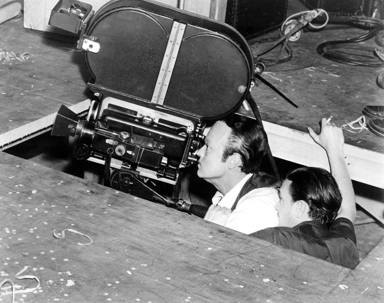

Citizen Kane, Welles and Gregg Toland Preparing a Low-Angle Shot
Orson Welles · 1941 · Production photograph, black and white
In copyright. Look and learn: shown for study, not for download.
Welles and the cinematographer Gregg Toland set up the post-election scene between Kane and Leland, filmed from so low an angle that the set floor had to be cut open. Every set was built with a ceiling, against studio practice, so that shots looking upward would show it. Toland had asked to work on the film; RKO borrowed him from Samuel Goldwyn in the first week of June 1940. Welles usually worked 16 to 18 hours a day, and principal shooting wrapped on 24 October.